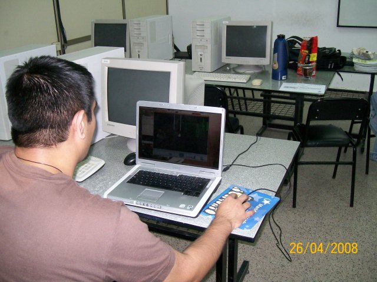
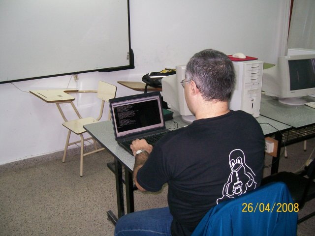
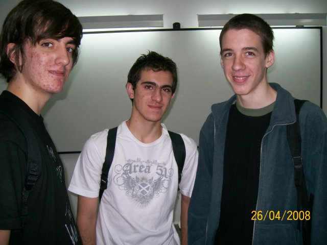

Algunas imágenes de Flisol 2008 en Santa Fe
El sábado por la mañana participe de una nueva edición de Flisol en la ciudad de Santa Fe. El evento se llevó a cabo en el laboratorio 2 de la Facultad de Ingeniería y Ciencias Hídricas de la UNL, llegamos tempranito y empezamos a desplegarnos, había wifi, muchos monitores para quienes lleguen con sus gabinetes, mates y bizcochos.
Aquí, algunas imágenes de la mañana:
Ubuntu-ar

El primer llegado de la mañana que no conocíamos. Un entusiasta del Software Libre que usa Ubuntu hace un año y medio y está encantado.
César trabajando

Desde temprano las notebooks de los miembros del LUGLi estuvimos instalados en el laboratorio 2.
Emiliano

Gracias Emiliano por organizar la edición de este año de Flisol en Santa Fe!
1° instalación

En esta notebook se realizó la primera instalación de mañana. Ubuntu 8.04, junto a su dueño.
Streaming

Nuestro amigo de la primer foto se sentó frente a una de las computadoras del laboratorio, puso un CD live de Ubuntu, detectó la cámara y se puso a hacer streaming del evento :)
Multitud

Más de 30 personas pasaron por el laboratorio 2 de la FICH para participar de Flisol.
Juventud

Una nueva generación de Linuxeros llega a la ciudad ;-)
Comentarios
Comments powered by Disqus